Wow! How’s that for a title?
OK. Here is yet another thing that you will not find elsewhere on the internet.
This post deals with the quantum attachments of one species consciousness (human) with another species consciousness (dog, cat, horse, etc.) during the MWI world-line switches. Which we tend to refer to as “time”.
- The universe is composed of quanta.
- Quanta can form “clumps”.
- Over time, these “clumps” can obtain intelligence.
- We refer to collections of “clumps” as species.
While I have repeatedly stated that “time” is how our consciousness experiences a sequences of world-lines, I have pretty much let it be understood that everyone else isn’t actually sharing those world-lines with us. Instead, they are “what it” versions of other people. Whom I refer to as “quantum shadows”.
Well, now I am going to lay down some really astounding information to you all.
When it comes to pets, and loved ones (really close pets, and really close loved ones), their consciousness does ACTUALLY share many of the same world lines that you would. (Not all of them. Not every one of them. But enough to consider a pair or trio of consciousnesses following and surfing the MWI together.)
You are not truly alone.
Here we are going to talk about this. But, first we need to really hash out a review of terms and concepts. Just a refresher for all you metallic men and women out there…
Review – The MWI
What everyone seems to think “Heaven” is this big old guy in a long white beard on a throne sitting and telling people to life in paradise as long as they worship him.
Nah. It’s not like that.
It’s a place, yah. And it is many things. It is more than what our physical reality is. That is for certain.
Heaven is also graduated. It possesses different regions and areas. Each region or area have different concentrations of quanta. (Quanta is the building blocks of our reality.)
They form different densities.
Some of which are very dense with one type of quanta, and others are dense with other combinations of quanta. It is a complex “soup” or “stew” of quanta that pop in and out and move about all under the influence of other “influences” (I will discuss these later.).
Consider "Heaven" to be everything. It includes the physical universe and the unseen "Heavens" often referred to in religious writings. It is a place where everything is composed of the smallest building blocks or components possible - quanta.
Within this realm, are clumps and arrangements of quanta. The quanta naturally starts to entangle with other quanta. They form arrangements, and dance about in certain ways. Over time, they get larger and more complex. They form things. They precipitate into simpler, slower and coarser things such as physical rocks, dust and energy.

Eventually, some of the quanta form into constructions that obtain sentience. The groups of quanta with sentience are called "souls".
The souls realize that the way that they can grow and advance is to organize their quanta. There is only one problem. Quanta can only organize through entanglements. They need to entangle with other quanta.
The way entanglements work is through association, or better yet, experiences.
Our Bubble of Reality
So, in order to obtain these experience, the soul creates a bubble within Heaven.
It is an environment where the soul can obtain experiences. These “bubbles” are regions that can best be defined as a construction. They are constructed regions manufactured by a given soul to obtain experiences within. These regions are unique and custom for a given consciousness.

A soul would connect to this bubble of reality via a “tube” or an interface. We call that interface as “consciousness”. Souls can have multiple consciousnesses but only one consciousness may occupy a given reality at a time.
A bubble of reality consists of four set “dimensions”. Three spacial dimensions and one of entropy; time.
The "passage of time" is simply our reality bubble changing by our thoughts. Additionally, other nearby bubbles also move about and change. They can influence our bubble as well.
The control over this bubble of reality is quite possible. That is because our reality changes with our thoughts. Each thought changes it.
Thoughts of the consciousness within the reality can alter the reality. Thoughts can make or break the experiences of the consciousness. As such the soul can learn from the consciousness and it’s decision making process. This is of course, through manipulation of the three dimensions plus the “dimension” of time.
Consciousness experience events within the reality. As such they generate thoughts. The thoughts alter and create the reality that the consciousness exists within. As such, the consciousness obtains experiences and learns from them.

“Seen” dimensions typically are referred to as the physical world. While “unseen” dimensions are referred to as various levels or dimensions of Heaven.
But, what exactly is heaven?
Please refer to the image above. How “heaven” is organized. (above). This diagram if a simplistic version of what a human “heaven” looks like. Let’s suppose you (the reader) is sitting down in your house reading this manuscript. That figure is the icon of the blue person shown by (B). You exist within this “bubble” or reality also shown by (R1). This “reality” includes the chair you sit in, the television show that you are watching, and the coffee beside you.

Extending beyond your (physical) reality is your “extended” (non-physical) reality (R2) which consists of your thoughts, memories and everything associated with it (also known as the “quantum cloud”).
Your thoughts regarding what you are now reading are moving about in this (R2) reality. This area contains not only thought, but emotion and other generated “influences” (far too complex to discuss at this time).

However, you have a soul (A) that is part of who you are. This soul only partially occupies your reality. In fact, it spends the vast bulk of it’s time outside of your “reality”. You know it exists, but you are unaware of it’s “day to day” experiences, challenges and behaviors.
Your soul can create numerous “realities” with numerous “individuals” (of which YOU are but one of the people that your soul creates) occupying those realities. This can occur at different times and at different locations. However, for now, let’s keep it simple and suppose your soul has created only one “realty” (R1) and (R2) for one person (B), you the reader.

Now, let’s suppose that you are married to another person that is part of your life. (A pretty common situation.)
That person would be represented by (C) which is but a “quantum shadow” of another person. It is not the ACTUAL person. It only seems that way. (Though in your reality, that person is just as real as anything else in your reality.)

What you see is their world-line version of where they married you and share your reality. It is not an actual reality (from their point of view, but rather the world-line version of them). (Your quantum-shadow spouse is but one version of a near infinite number of world-line variations of that particular person.)
That person (D) is actually living within their own “reality “just like you are. They may or may not see a quantum shadow of you. It is all determined by their version of reality. This of course is determined by their soul (E).

What is of most interest here is how their thoughts affect your reality (R1 & R2). While we all have our own “bubble” or reality that we live and exist within, our reality is constantly in flux by the thoughts of others (G). We view these effects as the “passage of time”.
The influence of the quantum-shadow of those nearest to us absolutely shape and mold the realities that we participate in. We can alter their influence by having “strong personalities”, or trying to isolate ourselves from others. However, the more we do so, the less likely we are to learn lessons and have experiences. It is the overlap of thought influences that create the experiences that we learn from.
Both your (A) soul and your spouse’s soul (E) exist within a heaven (F).
Your soul’s can work out different “realities” or “adventures” for both of you to share to obtain experiences.

The idea, of course, is to obtain experiences and configure the quantum clouds associated with the constructed realities that the soul utilizes. As soul grows and configures itself, it can “improve” and evolve. Hopefully towards an approved soul archetype and sentience.

As it improves and grows, the vast bulk of it’s quantum configuration dwells at different energy states. Each different energy state has a different place in heaven (F). Two are indicated by (J) and (I).
To prevent confusion, I would suggest that the reader consider “reality” as the first three dimensions, plus “time” as the fourth dimension.
I would then suggest that the fifth dimension, as world-line swapping (alteration of the “reality” “bubble”). This is very easy to visualize by using the above-mentioned model. For to understand what is happening in this case, the “quantum shadows” within your reality are being rearranged.

In “world-line” travel, all that is taking place is that the “quantum shadows” are being rearranged within one’s “bubble” of “reality”. This is fifth-dimensional travel. In the example above, Fifth-dimensional travel as world-line travel.
Quantum shadow (C) changes to fit the new revised “realty”. (It is now a yellow person instead of a red person.) We, as a participant within our reality look upon these changes as “world-line” travel.
From this point of view, it should be clear. That obtaining world-line dimensional travel is actually accessing our own soul and requesting it to alter our reality to fit our needs, while at the same time keeping the educational lessons that we are to obtain the same or better. This can be accomplished through certain techniques. In my case, we utilized a biological artifice to bend reality (within the confines of my experience structure).
So, in all actuality, there isn’t really any kind of “travel” at all. What is actually happening is the “reality” construct changes in accordance with the wants and needs of the soul.
If a given person, within a “reality” bubble wants to change his “world-line” he would be able to do so with the proper technology. However the changed “world-line” that manifests would be one that would either have the same and equal types of experiences for the soul, or that it would be one that would have more or “better” experiences.
There are even more interesting nuanced versions of “world-line” travel at the “higher” dimensional values. However, for our purposes, let’s keep it simple. I would then suggest anything above the fifth dimension as the realm of “heaven”. (Whether it is actually in a Heaven Universe, or within our “reality” universe.)
Review – What “time” actually is.
Most people have a really crap-tastic idea of what the MWI or multiple world-line theory is. They just cannot visualize it for the life of themselves. They have no idea what to think, or how it would manifest.
They come up with visualizations such as this…
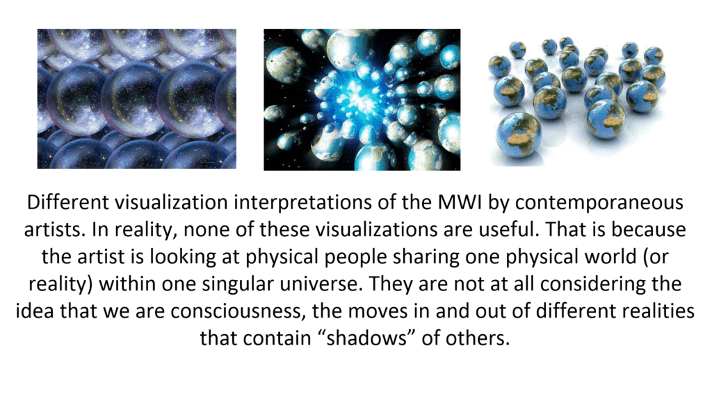
One major hurtle…
The problem with all these contemporaneous visualizations is that the artist, philosopher, or scientist does not isolate the concept of consciousness from that of a physical person. It is assumed, and defaulted to one and the same identical thing. When in fact, they are entirely two separate things.
Everyone assumes that all those people around us also possess a consciousness. We assume they are also like us; that they have an active consciousness and an associated soul as well. We make this assumption based on our interactions with them. They appear, to us to be fully actuated and in possession of a soul and consciousness. We argue here that the appearance of something does not equate to the de facto possession of something.
There are differences between [1] a “consciousness”, [2] a “physical body”, and [3] a “person”. For our purposes, a person is someone with an active consciousness. Most people think that all three things are just different names for the same thing. They are not.
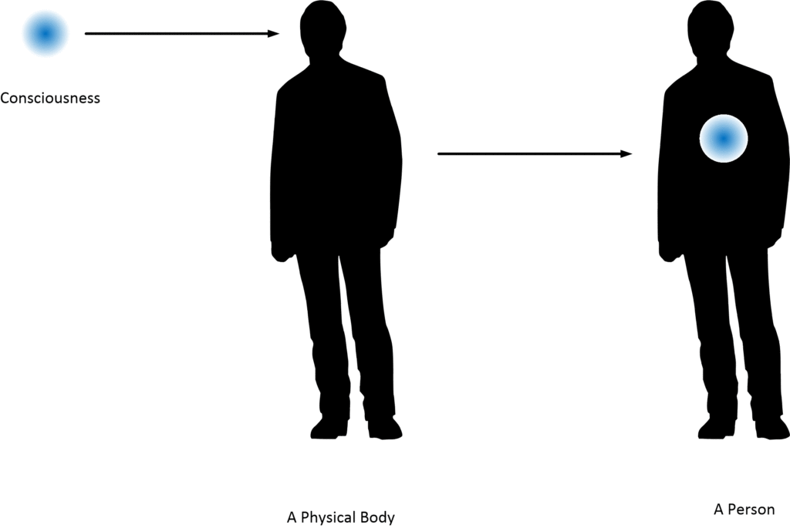
Most laymen, and many scientists do not understand this simple fact. They assume that everyone is a “person”. That we share our universe with other people who all have internal “consciousnesses”.
We do not.
We are a consciousness. Not a physical body.
Instead we are consciousness, that inhabits a physical body, forming a person. (As in the picture above.) We then occupy a reality.
In this reality, we are surrounded with physical bodies, but none of them possess a consciousness. Instead they appear to have a consciousness simply because of how they interact with us. This interaction of these others is how the soul obtains experiences and thus grows and advances in the quantum sphere.
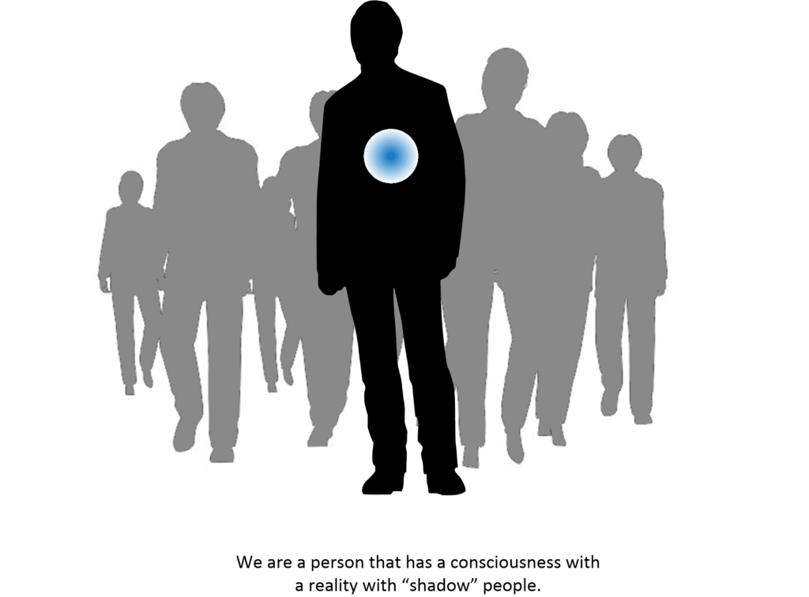
Thus, our universe is comprised with a near infinite number of world-line realities. Many are empty, and some contain a consciousness which is inhabiting a body to obtain experiences with. Our universe, thus looks something a little like this…
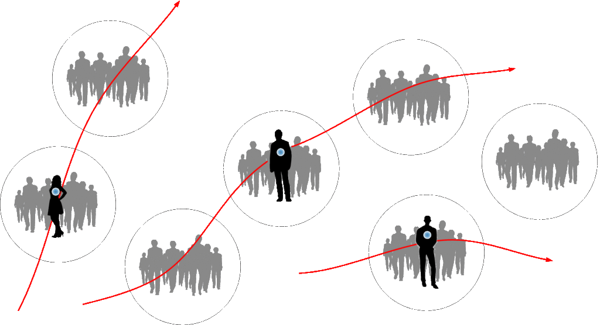
Why this is important.
If you want to know the “secrets of the universe” then you will need to forget everything you learned in school and college. For all of it is based on assumptions that are rock-hard, firm, fixed and imputable.
Most of it is really, really incorrect. For our “reality” is not what everyone thinks.
- We do not “share” our universe with others.
- We live alone in our universe.
- Everyone else are “shadow copies” of their true forms.
- These “shadow copies” are other people acting and living as if they were to share our universe. They are what could possibly exist and manifest. Not that they actually do manifest.
Shadow copies
For simplicity purposes, we simplify things to understand them. And in the case of these “quantum shadows” or “shadow people”, we say that they are empty and devoid of a consciousness.
But that is not really true.
Every shadow person, on every possible world-line has a teeny-tiny part of the quanta associated with another consciousness. It’s really sparse, and really small, but it does exist there. We just simplify things and say that a person; a consciousness, occupies a world-line alone.
It’s a simplification. And here we can see how the simplification helps us to understand things…
What it looks like is NOT the way it is.
We all think that there is just one universe, and one Earth, and it is populated by all of us together. That we share the earth with each other and that we are all equal and are in the same time-line.
All these assumptions are wrong.
We do not share our universe with others.
Nope.
Not. Even. Close.
Instead, we occupy a universe alone. We do not share it with anyone. Oh, yes, it does appear that we share it, but we really do not.
All those other people that we interact with are not really what they appear. They are a version of that other person. This is the version of that person were they to actually share the reality with us.
They are but quantum shadows of the possibility of interaction.
In Plato’s classic Allegory of the Cave, a group of people living in a cave have a very false view of the world because the only thing they can see is the shadows on a wall. Plato was trying to teach his students that the philosopher must see beyond the shadows to the reality that is projecting them, but what exactly is that reality. The reality that Plato wanted his students to see is not the physical form of the object casting the shadow, those physical objects are just another level of shadows! The world of matter is the shadow world, the world of illusion, the world of deception. It is not at all what it appears to be because our physical eyes, and other physical senses, can sense only the shadows called matter so we are deceived into believing that it is real. That is not to say that matter is not real. Matter is real just as the shadow of a tree is real, but the shadow is not the tree and matter is not true reality. -Cosolargy International
To understand this please note.
We are not a physical body. We are soul.
Now, do not be offended.
This does not at all mean that there is no love, that there isn’t a thing called togetherness. That there isn’t all the physical, emotional and spiritual relationships that we have with others. Do not be silly. Of course they exist.
What changes is the understanding of what a physical body is.
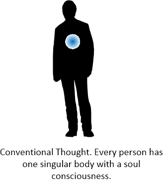
Instead of one (and only one) physical body that your consciousness inhabits, there is an infinite number of physical bodies. Each one within a unique and separate world-line.
You, as consciousness, moves in and out of all these other bodies of yours through thought.
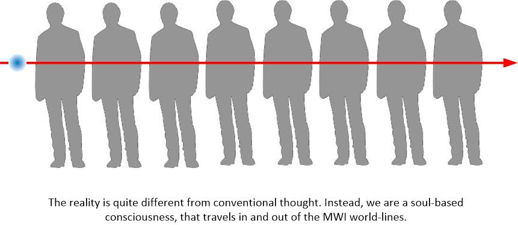
This is also true for the entire rest of the universe. Everyone else also possesses bodies such as this. Your dog has this kind of body. Your cat has this kind of body. In fact, the felines are actually quite cognizant of this ability.
We are NOT a physical body. We are soul that manifests a consciousness within our reality.
Knowing and realizing this, makes some of the passages in the religious books far more reasonable, and easier to understand. It doesn’t matter if it is the Koran, or the Bible. Understanding the way the universe works, and truly works, adds a far greater understanding to the wisdom that resides inside of these great works.
The soul creates a “consciousness” that it places in a “container”. This container is a “world-line”. Our “universe” is a near infinite number of world-lines.
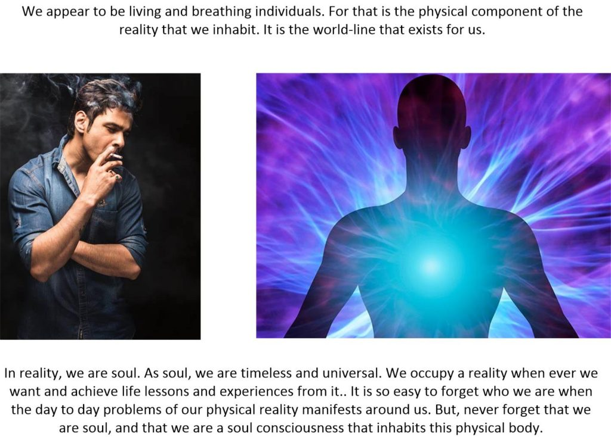
We are placed here for our consciousness to obtain experiences.
We navigate in and out of the world-lines though our thoughts. Our rate of travel (in general) is (for most humans) about 4 Hz. Or, four cycles per second. (Four world-lines each second.)
There are different rates of travel, and different species travel the MWI at different speeds. In general, the rate of travel is proportional to the operational speed of the brain. This of course varies. If you dull your brain to such a degree that your brain is slower, then you will not travel the MWI as fast as others would. And you might find your life slowly "falling behind" that of others.
Thus…
- We are consciousness. We “rent” a physical body for a fleeting moment of time.
- Our reality is NOT shared. Instead our consciousness occupies a singular world-line. It is a momentary event.
- We (our consciousness) migrate between momentary world-lines through our thoughts.
- This movement is known as “the arrow of time”.
The best way that I can introduce the reader to this “radical” understanding of how our universe actually works, is to use the “movie projector theory”.
Movie Projector theory for the MWI.

Thus, the idea of the actual way things work is really, really, REALLY different than what everyone assumes or believes. The difference is so stark, that many researchers are handicapped in their understanding of reality. Ah, but it need not be that way.
Come on! You can well understand the movie projector analogy, can’t you?
If you can, well good for you! Award yourself a gold star.
The Movie Projector Theory in more detail…
The problem with that analogy (and it is a really good analogy), that that it does not take into account the individual frame selection in the film role. For in actual contemporaneous movies, it is the movie producer that selects the individual frames, and the person just sits back and watches the movie.
In reality, it is more like an entire bank of projectors, and we (as soul) selects the movie that interests us.
In this model, we have numerous movie projectors, all running simultaneously (at the same entropy)… Ah! At the same time.
We can “jump into” any scene portrayed by any of the movie projectors at will. We just look at the projected images.
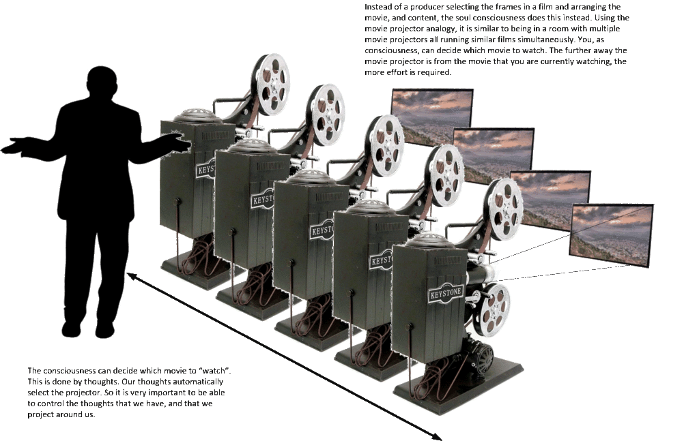
The further away the movie projector is from us, the harder it is to watch that movie. So we must watch closer movies (momentarily) and then “edge our way” closer to the movie projector that we are interested in.
Most people, sadly, do not do this. They allow the movie projectors to operate randomly and they find themselves watching movies that they may not really care for.
How it manifests
So, using this film / movie projector analogy further it is exactly how our consciousness selects the “life experience” that we obtain. Each frame in a given movie reel is a world line. They are all playing about simultaneously, and our consciousness selects the world-lines to occupy by hopping from frame to frame. (World-line to world-line.)
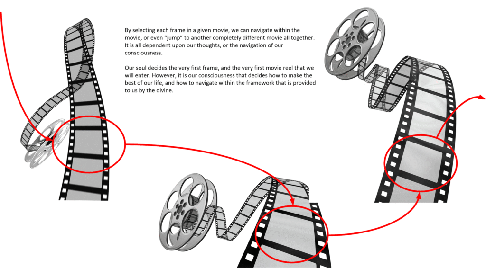
Nearby movie projectors are nearly identical to the one that we are viewing at the moment. Their divergence from our “present reality” is often very small.
As we move further and further away to more distant movie projectors the divergence gets larger and larger and larger.
This is why it doesn’t seem like we are moving from one world-line to the next. It seems smooth, seamless and transparent. That is because the deviance in nearby world-line (projectors) is very, very small.
Our thoughts select the world-line…
In reality, the “film spool” (a collection of “frames”) is known as the “life experience” of a given consciousness as it takes on a life.
It is a record of our travels in and out of different world-lines. Where a “world-line” is represented as a frame within the movie reel.
The individual “frames” that are selected, are chosen by the thoughts of the consciousness that inhabits the body. We migrate to things that we think about. We migrate to what we think about.
Not necessarily what we might desire. It is what occupies our thoughts most of the time. (So shut off that stupid manipulative television, why don’t ya!)
For all its popularity, Facebook isn’t without its share of scandals. In the latest one, details came out of an experiment conducted on 700,000 Facebook users over the period of a single week in 2012. News feeds were manipulated to contain positive or negative news and content, then users were monitored to see if the change made them use more positive or negative words in their status updates. And it worked—people’s status updates showed a change in emotion that went along with the kind of news that they were exposed to. The term used was “emotional contagion,” and it confirms something pretty frightening. According to the study, people don’t even have to be physically around another person in a bad mood to absorb the negativity into themselves—negativity can be “caught” just from looking at a computer screen. There doesn’t need to be a personal, emotional connection for emotional contagion to happen. Not surprisingly, the study has brought up a number of disturbing questions, and it’s now being investigated by organizations like the Information Commissioner’s Office in Dublin. Those questioning the ethics of the study state that it’s nothing less than psychological manipulation. As if that’s not shady enough, Facebook users were unaware that they were having their emotions and moods manipulated through another party controlling just what was popping up in their news feeds. -List verse
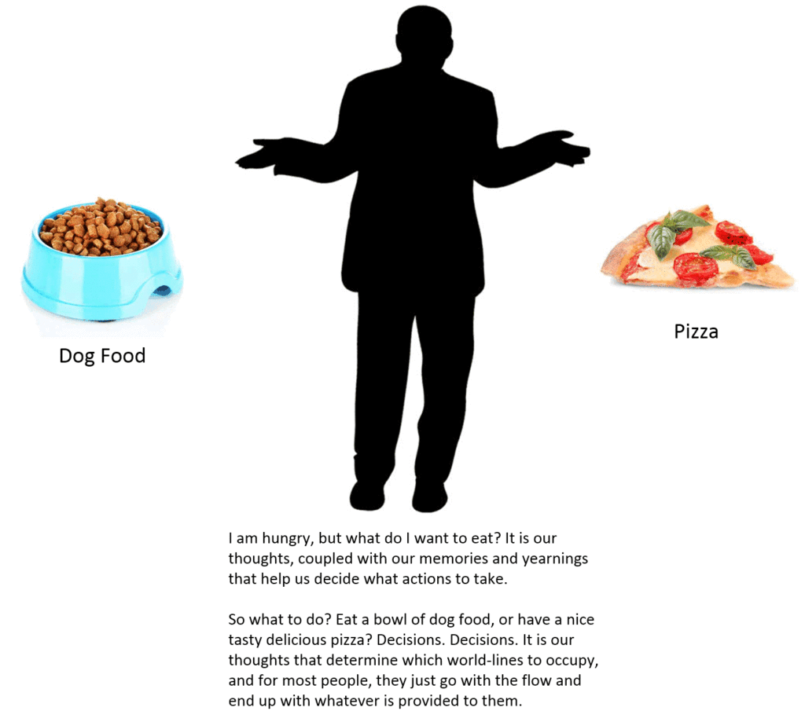
No two thoughts are the same…
One of the problems that people need to come to grips with is that thoughts are not equal. Thoughts are “weighed”. Each thought is different. And thus each thought has a different degree in influence in world-line selection.
Thoughts and emotions together form a complex stew of “influence” that can absolutely affect your world-line travel adventures.
These thoughts are comprised of “levels of influence”.
- Duration of thinking about something.
- Emotional attachments with the thoughts.
- Prior memories of similar events.
- Prior physical experiences.
- The thoughts of the people (shadow consciousnesses) around you.
- Cultural variances, needs and desires.
- Mass thought manipulation (Have you been paying attention to the news lately?)
- One’s inherent belief system.
Ah, no two thoughts are equal. They have a “weighed” value or influence factor. Further, they are also modified by other thoughts by other “shadow consciousnesses” (Individual proxy consciousnesses that share a given reality.)
Think about it. It has to be this way, or else an obsessed person should be able to have their dreams manifest quite easily. But, the truth is that they don't. That is because of a slew of factors. One of which is the "level of influence" that a thought is given within a given world-line.
One of the most important and significant factors in thought-directed world-line selection is one’s inherent belief system.
Consider the cow.
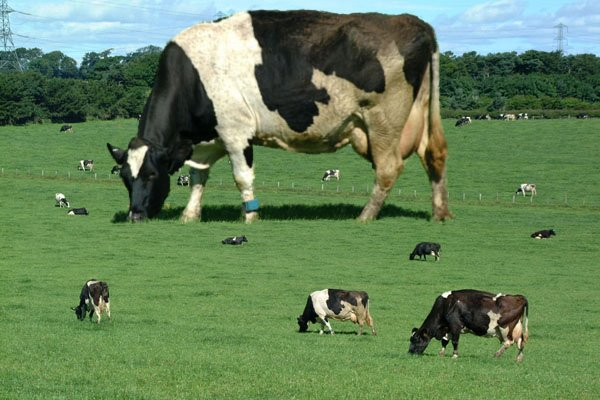
Let's use the cow analogy. For instance, you might be starving, and ready to die of starvation. A typical American would not have any qualms with butchering a cow and eating steak. A Hindu would not, and would rather die than kill a cow. A vegetarian might be against eating it, but would not have any qualms drinking it's milk. Our actions are determined, in large part, by our belief systems.
It is our deepest belief systems that have the greatest influences in our thoughts.
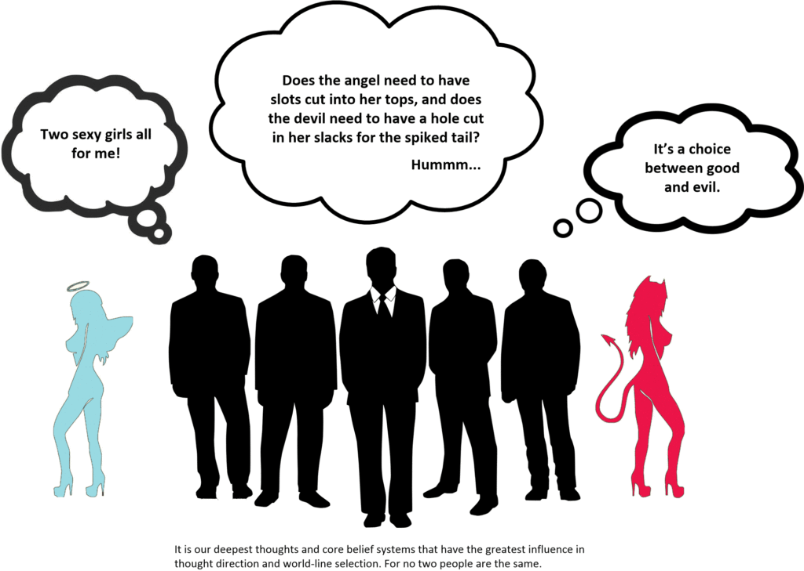
This is a very important subject, and I will cover it later on. For now, let’s look at things simply. Consider that all thoughts are simple, unique and they can easily select the “frames” or world-lines that the consciousness will migrate to.
The actual “landscape” of the MWI as viewed by the individual consciousness.
Imagine a “road map” of nearby world-lines.
Now, what would it look like? What would it resemble? How would we be able to take into account all the different variables that are constantly shifting and changing all around us?
Obviously, it would have a form of sorts.
It would have (as an illustration) globes representing a given “world-line” (or “frame” in the movie using the analogy above). It would also have lines. The lines would represent a path of migration. Which is the most probable paths for a consciousness to take when moving from one world-line to another.
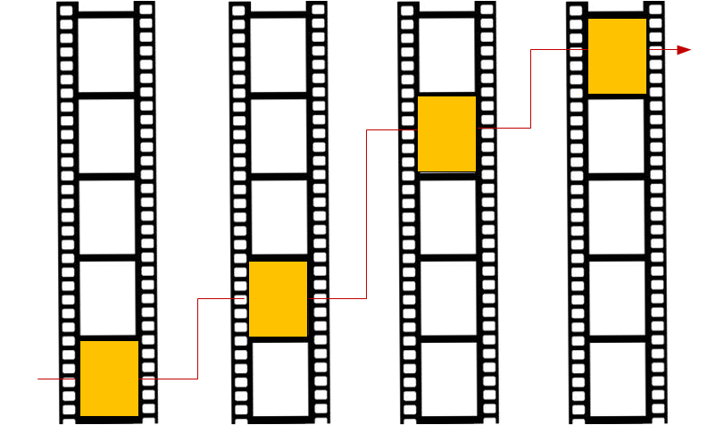
Now, this is a pretty good analogy as far as it describes the path that a consciousness would take. However, this analogy ignores the world-lines that are not taken. And in general, there a millions or much larger numbers of world-lines that are constantly ignored.
So a better way of mapping this procedure is to do so in a three dimensional framework.
Moving away from the movie projector analogy and mapping it upon a three-dimensional grip, it might look something a little like this. With the positions of the world-lines geographically positioned relatively to the pathways as a function of the intrinsic value of the particular world-line.
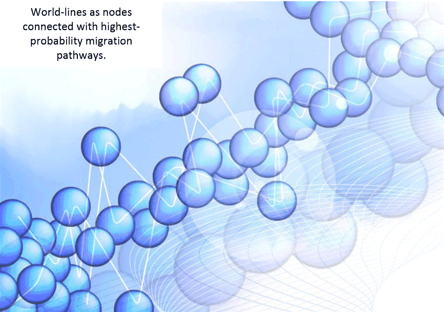
However, it would not look so much like a cluster of grapes, or bubbles on a foamy sea of bath water. No.
It turns out that the highest probability pathway forms a kind of sheet or flat surface when plotted in the three dimensions. If you end up plotting everything, you can't make out heads or tails of the map. It's just this one big mess. But, if you plot the pathways that have the greatest probability of travel, it simplifies immensely.
Instead of a cluster of grapes, it would look a little like a mesh or a grid. With the points being world-lines, and the lines connecting the points as the shortest distance to that world-line.
Now, if you take a step away from this “map” of “world-lines” and their lines of “high-probability” consciousness transfer it might start looking a little like this. Where you would see a “surface” of “highest probability” pathways, with the relative ease of travel and the strength of character needed to traverse affecting the heights and valleys of the apparent surface.

The “surface” that this map forms is the HIGHEST PROBABILITY of consciousness movement from one world-line node to another.
- Going above the surface indicates a strength of will over the combined strength of inertia of a given world-line.
- Going below the surface indicates a weak strength of will and a consciousness being overwhelmed by the inherent inertia of a given world-line.
Additionally…
- Moving to the left upon the mapped surface indicates more freedom of movement upon a given world-line reality.
- Moving to the right upon the mapped surface indicates less freedom of movement upon a given world-line reality.
Thus…
The topographic map display is a useful tool in understanding the hurtles and trials that one needs to endure to travel forth on the MWI.
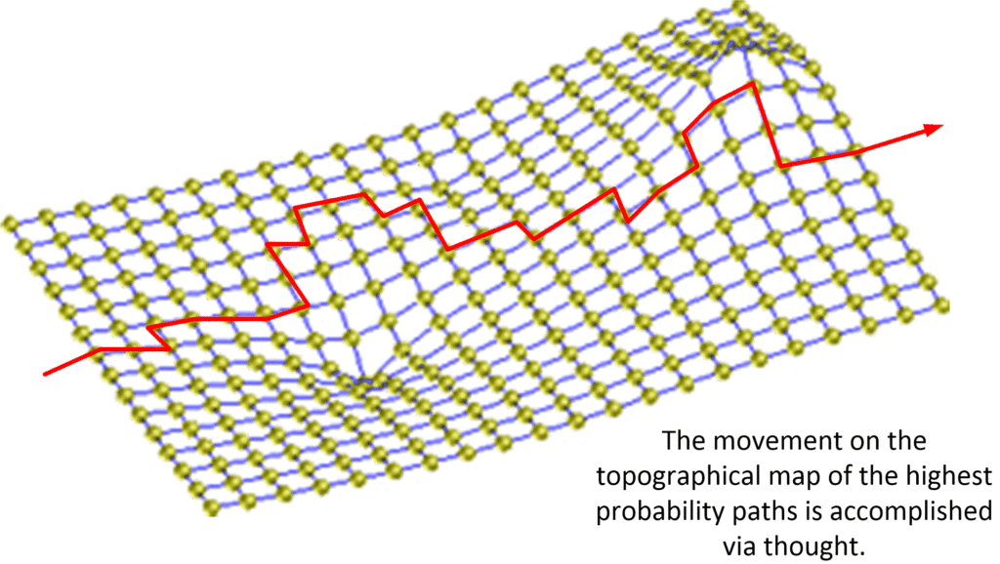
However, the rate of travel is fast…
The thing is, however, that the rate of travel through each world-line in the MWI is quite fast. It is around four world-lines per second. (For some people it is much, much higher.) Thus, for any topographic map to be of any use, it will have to have to exist on a much larger scale than what is presented here.
As such, the individual world-lines would appear as tiny pixels, and for the map to be of any use, it should describe a travel duration in terms of weeks rather than seconds. This means that the map would look like a smooth gradient rather than an array of “floating”globes.
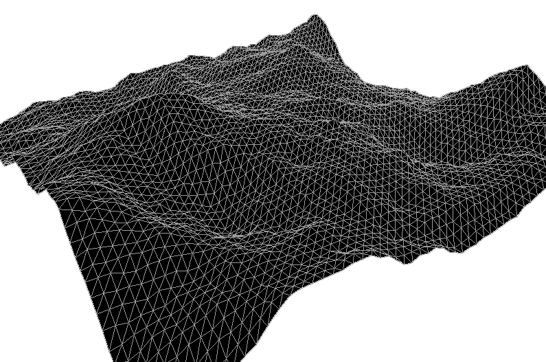
Mapping the surface.
Here, we are going to take a look at the way the landscape actually looks from the point of view of an individual consciousness. It is NOT simple and flat. It is undulating with all sorts of “nearby” world-lines that the thoughts can select and migrate towards.
In general, it might look something along these lines…
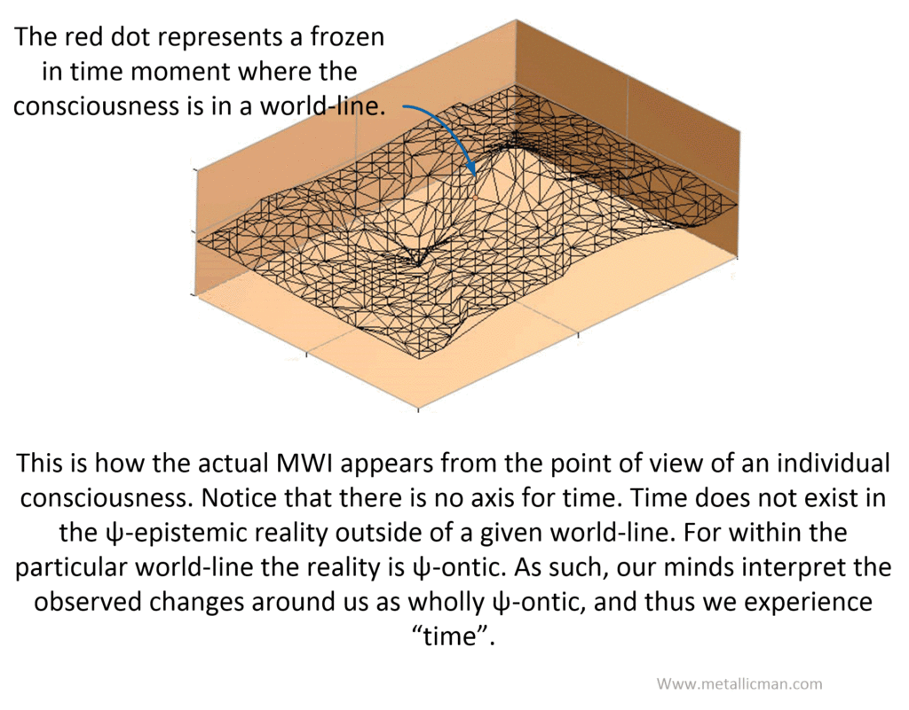
In reality, this topographical map is much more complex and complicated. However, I was able to (functionally) navigate it using a sort of simple 3d understanding, and that understanding is one that I will provide here. Yes, these are my conventions distilled and illustrated as a teaching aide.
Here we look at it is the substantially simplified version that I am accustomed to using.
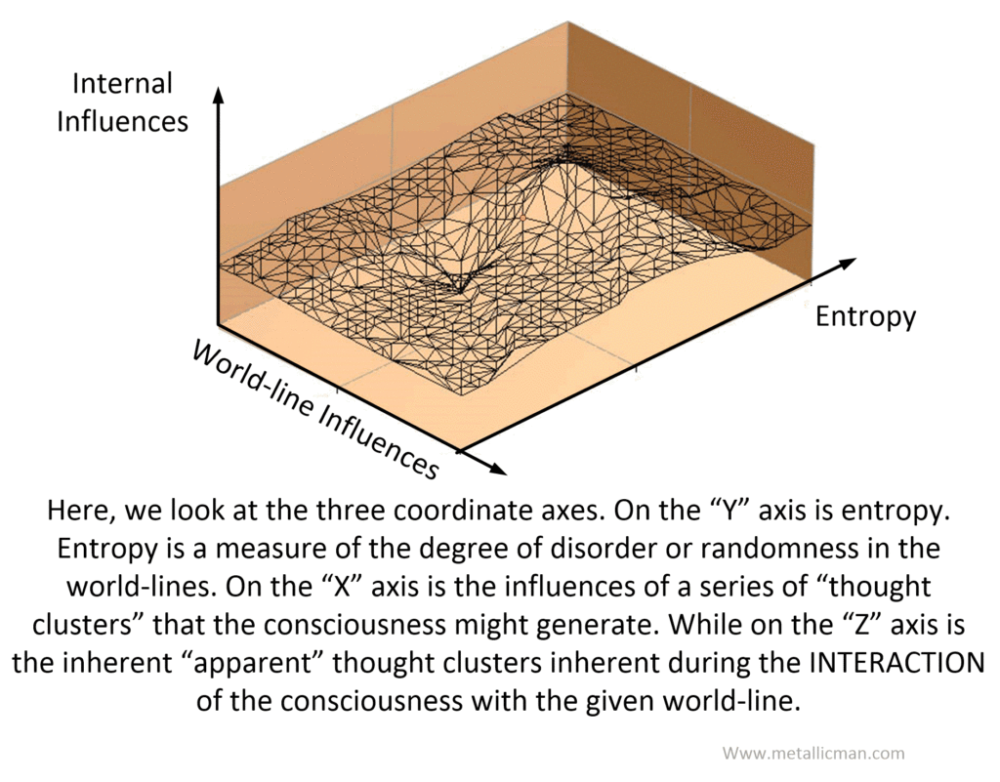
Now because this is a very simplified diagrammatic representation, numerous variables are incorporated in the “X’ and “Z” axes. (Not to mention the entropy axis “Y”.) In general, as I understand it, the characteristics of the “X’ and “Y” axes are an algebraic sum of the inverses of the individual contributions to the axes elements.
OK. I know that I lost you. Just think of it as a sum average of all your thoughts.
Internal Influences
Internal influences should be understood as the ultimate result of comparative thought-driven MWI transitions by the given consciousness.
Suppose the mind has a wide selection of thoughts. Everything from anger at a spouse, to frustration at work, and influences in the news, to a loving thoughts related to romance. All these thoughts will work together to generate a (singular) "value" on this axis. But, it is more than that. It is also the weighed value and the intensity of the thoughts, coupled with the apparent carry-over duration longevity of the thoughts as a person migrates in and through the other world-lines. Let's keep it simple. Look, if you drop a slice of pizza in the middle of a muddy road, would you [1] pick it up, wipe the mud off the pizza, and eat it. or [2] say "heck with that", and leave the pizza in the mud as a lost cause. For most people, they would give up and abandon the slice of pizza. The amount of mud is far too distracting to enjoy the slice of pizza. That is that way this system works. For if you abandon the slice, like most people would, your would occupy a world-line on the surface of the undulating map. If however, against all probability and convention, you decided to eat the slice, you might be above or below the surface, depending on other factors.
Here’s an example.
Let’s suppose that you are a simple fellow and you have five things going on in your life.
- A spouse that wants a divorce.
- A boss who is hinting on firing you.
- A yearning for a club sandwich and an ice cold beer.
- A pet that loves you and is very loyal.
- Memories of fishing with your father.
In this example, some of the items would have more emotion attached to it that others. While other issues might be better at controlling your emotions and directing your thoughts. While still others might be able to erase the thoughts completely (if for a short period of time).
You might be an emotional wreck and your thoughts would manifest a life that would reflect your thoughts.
As an aside, drugs and other stimuli can also influence thoughts and behaviors. All of these complexities can alter the navigational ability on the MWI.
There is no way to judge which thoughts or issues affecting the thoughts would have the greatest influence on the person because it is their deepest internal core belief systems that would result in how the world-lines would manifest.
All that one can assume is that all the factors would be weighted together and balanced though the core belief systems of the soul / consciousness. This would influence the momentary section of the next world-line.
Is it no wonder that when things start going wrong, that they often end up spiraling out of control?
- The Meltdown of Charlie Sheen
- Charlie Sheen’s Meltdown
- Charlie Sheen’s Public Meltdown in 2011
- Charlie Sheen blames ‘tiger blood’ meltdown
- Read Jon Cryer’s Painful Inside Account of Charlie Sheen’s meltdown
External Influences
External influences should be considered the inherent inertia that comes with a given world-line.
Inertia. Inertia is the resistance of any physical object to any change in its state. Once you have a bowling ball sitting on the floor, it is a little difficult to get it to move. However, once you get it moving, it's hard to slow down. That difficulty... getting it started to move, and stopping it from moving... is what is known as inertia.
For our purposes it is the accumulated influences of the “shadow thoughts” of those (non-consciousness) apparent beings that share a given destination world-line. These are all the physical and non-physical influences that would affect the thoughts of a consciousness while it is in a given world-line.
You see, there can only be one consciousness per world-line. All those other "people" that we share the world-line with are actually "shadows". They are the bodies and representation of other consciousness were they to share the reality with us. As such, not only are their physical being present with us, but also their thoughts, dreams, desires and urges as well. A "shadow" is a person that we share the specific world-line with. However no consciousness inhabits their body. Their actual consciousness is off in another reality. We are observing their 'shadow" or a portrayal of how they would behave, act and think were they to share our reality with us.
The arrow of time.
With this being understood, a consciousness… a person might experience world-line travel at a rate of around 4 Hz, and visit numerous world-lines in any given instance. Thus the “arrow of time” might look something like this…
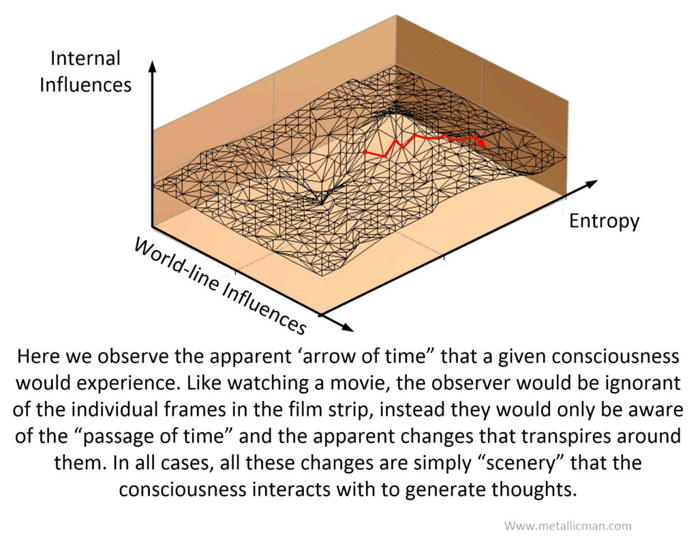
Thus in this simplified diagram showing the geography of the MWI you (the reader) can see [1] how the passage of time manifests, [2] how your thoughts can alter and change the “X” vector component, and [3] how a given world-line can influence the path direction via a “Z” axis vector. You will also notice that the “arrow of time” [4] moves along the direction of decreasing entropy.
Entropy A measure of the amount of disorder in a system. Entropy increases as the system's temperature increases. For example, when an ice cube melts and becomes liquid, the energy of the molecular bonds which formed the ice crystals is lost, and the arrangement of the water molecules is more random, or disordered, than it was in the ice cube. We can assume that in a macrocosmic universe, that it can be best represented as time.
The migration process.
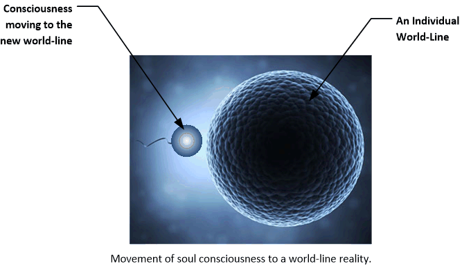
Our consciousness moves from one physical body in one world-line to another in a different world-line. For most humans, most of the time, the rate of travel is around four world-lines per second.
Expert hint; If you are using "the power of intention" to manifest your reality, what you are doing is focusing on a destination world line. If you track your success or failure in this effort, you will discover the amount of time it will take for your intentions to manifest. If it took 6 months, then that means that you had to pass through 62,208,000 (more or less) world lines to arrive at your destination world-line. Figure around 10 million world-line transitions per month.
The way that consciousness is able to move in and out of the various world lines is though wave propagation behavior.
- While it is a given world-line, the consciousness occupies the body in the particle form.
- While the consciousness moves from one world-line to another, it is no longer occupying a body. It is thus in a wave form.
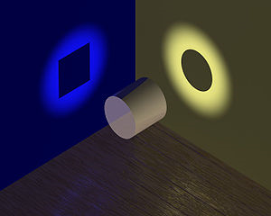
This all happens rather quickly. In most people, mostly the rate of travel from one world-line to another is around 4Hz. For most humans our brains have a difficult time observing the changes in these movements. So we think that we are living in one singular world-line that we share with others.
Here is a gif that kind of illustrates the point, and the system at work here.
The entry process
This is how the consciousness changes from wave to particle for entry within a body within a reality. Our consciousness naturally exists in the wave form.
However, the moment it “crashes through” into a fabricated world-line reality, it changes form. It becomes a particle. It’s a natural process.
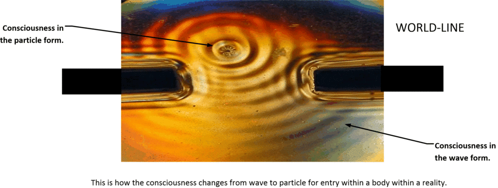
Our “universe” is often quite confused and mislabeled. We use that term to define what we observe, when in reality, what we are observing is a string of static world-line universes while we experience “time” Each moment is a snap-shot of a “world-line universe”.

All of these world-lines lie within a much larger physical place with is called the “physical universe”. It contains many things. Including many non-physical things.
Review – We inhabit world-lines alone.
So… what have we reviewed?
- The reality is a series of world-lines. Each a “frozen” moment in time.
- Time is the movement of consciousness through those world-lines.
- We travel alone, with the only thing of interest is our consciousness.
- Shadow people lie around us, but they are “empty”.
Now all of this pretty much sums up the idea that everything that you know about the universe, life, spirit, and the physical world is wrong. In fact, it is so very wrong that there can be absolutely zero recognizing the two. You either believe the way things actually work, or you don’t. Instead, or going with the way things actually work, you might try to fit it into the fantasy that we have constructed for ourselves over the last 5000 years.
Now all of this is a radical notion.
It is one where the physical universe is a construction. It is used by consciousness (which is controlled by a collection of quanta, known as “soul”) to obtaining new experiences. And experiences is what cause quanta to become entangled with other quanta.
Thus, the entire “secret of the universe”!
Ta Da!
But are we really always alone?
As such, in order to best describe this process, I explained that consciousness goes in and out of world-lines. But that it does so alone. That each world-line appears to be populated with other people, other animals and other things. But those aren’t “real” people, animals and things, that they are actually “quantum shadows” of others instead.
Which lends people to mistakenly believe that they are all alone.
Ah!
But this isn’t true. Not at all.
In reality, those quantum shadows are just elements of other consciousnesses and other souls, it’s just that their representation in any given particular world line is very tiny.
- Your consciousness is 60% present in a given world-line.
- Everyone else’s is a shadow and only 0.00000000000000000000001% present.
When your consciousness is in a world-line, it really isn’t there 100%. It might be there 60%. With the remaining 40% spread out among 100,000 trillion other world-lines.
And that is true with every other animal, person, critter and plant.
For simplification purposes, it’s just easiest to imagine that you are alone surfing the MWI with empty quantum shadows of others.
But that simple way of thinking is really just “training wheels” to understand the MWI and world-line travel.
In reality, you are actually sharing a world-line with others. It’s just that (from their point of view) they are hardly participating in the one that you are in. Their other world-line where they are on might have a reality quite different from yours. But they are touching your world-line, it’s just not that strongly.
And now for the new stuff…
Love is very strong and it is an emotion that has quantum components that “plug into” our very bodies, our very natures, and cause us to build up great entanglements with other people, places, things, and …
… loved pets.
When we truly love someone and something, we want to be with them. And it is this strong desire that forges very strong emotional bonds. These bonds can quickly become physical with would result in quantum entanglements.
And that means…
That something “special” is going on when someone loves another.
And this “special” thing is the entanglement of emotions, and the quantum entanglements of the two consciousnesses together.
Which means…
That a world-line that contains your consciousness at 60%…
…would attract the consciousness of another…
…so that both you and your love interest (pet, lover, family member) would both (for a while, at least) share the DOMINANT world-lines together within the same cycle.
Or, in other words…
Instead of…
- Your consciousness at 60% occupancy within a given world line.
- Your pet, lover or friend occupancy at <1%.
It would be different.
It would be more like this…
- Your consciousness at 60% occupancy within a given world line.
- Your pet, lover or friend occupancy at 60% as well.
Both of you two would travel the MWI together.
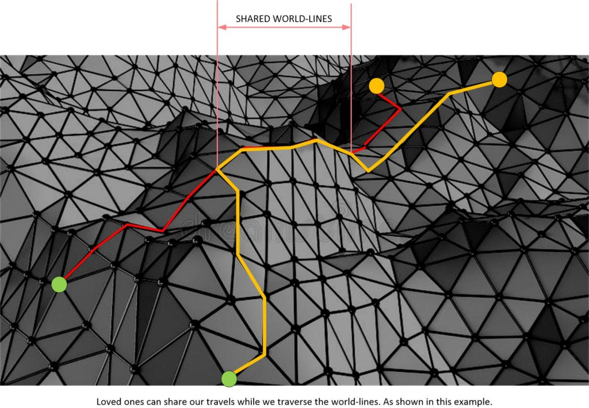
Pair consciousness exploration of the MWI
What this means is quite significant.
No longer does your sole thoughts navigate your destination world-lines. Instead, something else happens. The navigation becomes quite different.
Both of your now navigate the world-lines together. With the dominant personality taking on the majority of the dimensional navigation responsibilities.
And we can see his effect in all sorts of ways. Both good and bad.
Beloved Cat, Horse or Dog The consciousness and the desires of an animal is different than that of a human. Thus the human who is paired with an animal friend might find their life takes on a kind of controlled calmness and sensibility. If you have a stressful and crazy life at work, it will be the cat or dog that will create a tranquil life for you at home. They will navigate the world-lines while you are with them, and the times will be calm, cool and collected. The beloved pet will navigate the world-lines for you. They will migrate towards comfort and happiness. Married to an alcoholic, or someone with an addiction. Here, the drives and desires of the chemical addiction will alter all the navigation control. The spouse of the alcoholic will find that the alcoholic or addicted person will drive the navigation of the world-lines, and over time, the life style and calmness of life will become more and more chaotic. The alcoholic would navigate in a very focused and directed manner. It would drag everyone along with that person towards the world-lies they want, whether you want to go or not. Married to someone with a mental illness. A person with a mental illness will be just as bad as someone with an addiction, only more so. They will not have the reasoning ability of a "normal" person, and often their odd thoughts and crazy unrestrained emotions will result in all sorts of bad and dangerous world-lines. Being a caretaker for a person with a mental illness is not a happy life. At best, it will be chaotic with all manner of stops and starts and redirections. The only way that a person can get off this crazy union is to [3] have a much stronger personality, or [2] sedate the mentally ill person under strong medication, or [3] leave that person and do not look back.
Entanglement of different species.
I can see a lot of lovers, long well-established couples, and animal lovers all over the world nodding their heads in collective agreement. Yes, it is true, as long as the love is present, there is a strong likelihood that the two consciousnesses would share the given world-line switches together.
You would not be able to tell when you are both on the same world-line actually or you are with a quantum shadow of your beloved. But that is fine. It doesn’t matter, that much.
In general, the greater the love that you generate towards others, the stronger the associative world-lines are. As long as the love is strong, then the world-lines would either be shared, or at the very least, cluster together.
Emotional Connections
Which means that as long as everyone is “on the same page” or in agreement with the ways things should be or get accomplished (family, work, life, friendships) then you can well expect that the life would be calm and controlled and pretty nice.
If however, you have a dominant personality in the group, and that person does not think the same as the rest of the group, then the entire group could very well be dragged with that person’s thoughts and desires. And this can become very dangerous.
Which is why I say that both LOVE and HATE are the same thing as far as quantum associations are involved.
Both will tie you to another, and actually result in you sharing the same world-lines or at least associating with theirs.
Be very careful concerning this. As both the emotions will tie you all together, how the world-lines will manifest will be by the thoughts that you all would generate. And the truth is that hateful thoughts can create very, very, very black world-lines.
Be particularly cautious of people who spew hate and dangerous thoughts. They will drag you towards very bad places.
And control you there.
Why pets?
There is an association with our pets that we build up. Whether it is a dog, a cat, a horse, or any of the many, many pets that we might associate with. We share real love with them. They become our buddies and are more than just friends to us. They are our special companions that have a very precious role in our life.
And I just want to tell everyone that this role also has a component during world-line transitions.
So please kindly pay attention to my observations…
- Quantum shadows or shadow people and pets are not devoid of consciousness, it’s just that most only have a very tiny occupancy when your consciousness is on a given world-line.
- If you have a strong emotional attachment, and they have it as well, you will both end up sharing the world-line cycling together at the same time.
- The dominant personality will take over the navigation during this period of time. There will always be a dominant and a passive component to this relationship.
- Beloved pets will mellow out your world-lines considerably. If happiness is your ultimate goal, get a beloved pet.
Conclusions
Since you would have an attachment with a person or a pet, and you would share world-lines together for a period of time, then it makes sense that you would have a strong bond of attachment whether you are alive or dead.
This attachment will come in handle when you two reunite in the non-physical worlds.